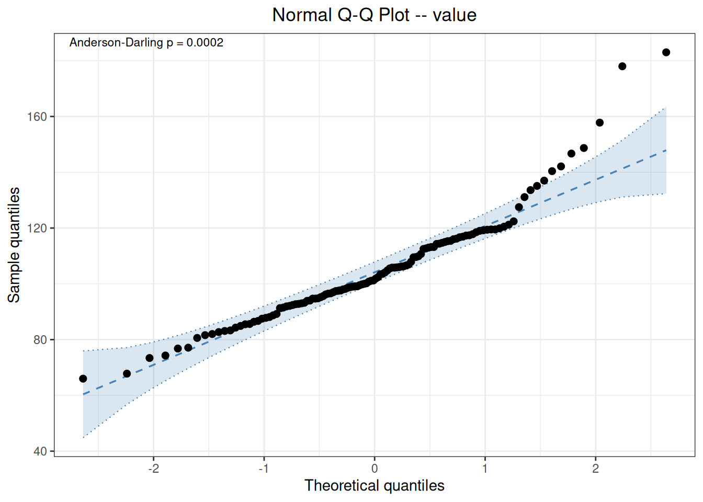
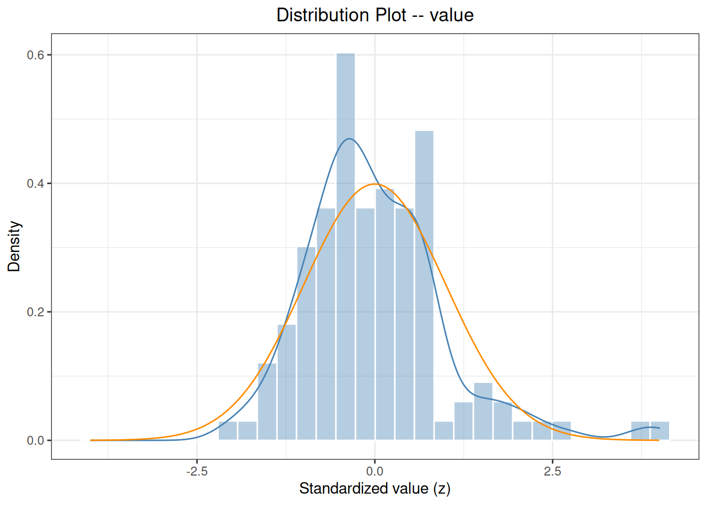
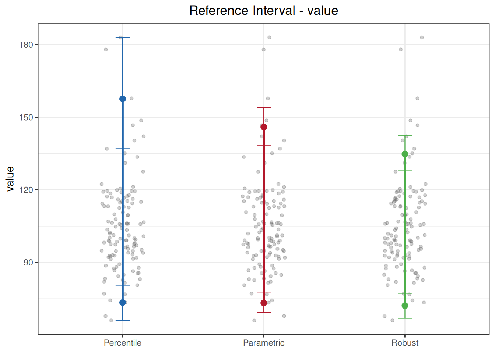

Code
library(ivdtools)
library(readr)A reference interval (RI) is defined by the measurement results of a reference sample population and is used to interpret the normal range of an individual’s results, corresponding to CLSI EP28-A3c. ivdtools provides three methods: the percentile method (nonparametric), the parametric method (normal or lognormal), and the robust method. The three methods differ in their sensitivity to sample size, distribution shape, and outliers; it is recommended to apply multiple methods to the same data simultaneously for comparison, and to perform outlier detection and normality assessment before establishing reference intervals.
This document demonstrates pre-analyses with outliers_test() and normal_test(), and then calls reference_interval(method = "all") to output the reference intervals of the three methods at once. The example data are deterministic teaching data (n=120, mildly right-skewed and containing outliers).
library(ivdtools)
library(readr)| Function | Main purpose | Key input or output |
|---|---|---|
outliers_test() |
Outlier detection | Grubbs / ESD / Dixon / IQR |
normal_test() |
Normality test and graphics | method="auto" selects the test by sample size |
reference_interval() |
Reference intervals by three methods | method="all", interval, ci, id |
plot.reference_interval() |
Plot intervals by method | jitter + upper/lower limits |
ri_data <- read_csv("./data/reference-interval.csv", show_col_types = FALSE)
ri_data <- as.data.frame(ri_data)
str(ri_data)'data.frame': 120 obs. of 2 variables:
$ id : chr "S001" "S002" "S003" "S004" ...
$ value: num 131.1 100.8 106 74.3 116.9 ...EP28 recommends reviewing outliers before establishing reference intervals. With sample size n=120, Dixon is not suitable (Dixon applies only to n≤30), so use Grubbs and the generalized ESD:
outliers_test(ri_data, col = "value", method = "grubbs")Grubbs Outliers Test
Data: ri_data
Column: value (n = 120, missing = 0)
Parameters: alpha = 0.05
Outliers: 1
Index Value G stat Critical
-------------------------------------------
88 183.0000 4.0104 3.4451outliers_test(ri_data, col = "value", method = "esd", r = 3)Generalized ESD Outliers Test
Data: ri_data
Column: value (n = 120, missing = 0)
Parameters: alpha = 0.05, r = 3
Outliers: 2
Index Value R stat Critical
-------------------------------------------
88 183.0000 4.0104 3.4451
57 178.0000 4.0576 3.4424Parameter notes: The
methodofoutliers_test()can be"grubbs","esd","dixon", or"iqr"; ESD specifies the maximum number of detections viar, Dixon specifies the tail viatype("both"/"min"/"max"), and IQR specifies the multiplier viacoef(default 1.5). Detecting an outlier does not mean it should be deleted — go back to the original records, experimental procedure, and protocol requirements, and perform an include/exclude sensitivity analysis when there is sufficient justification.
nt <- normal_test(ri_data, col = "value", method = "auto")
nt
Normality Test
Data: ri_data
Column: value (n = 120, missing = 0)
Method: Anderson-Darling
A = 1.7577, p = 0.0002plot(nt, type = c("qq", "his"))

method="auto" automatically selects the Anderson-Darling test for n=120; the p-value is very small, indicating that the data do not follow a normal distribution (the data are right-skewed and contain outliers). The QQ plot and histogram can visually confirm the skewness.
ri <- reference_interval(
ri_data,
col = "value",
interval = 0.95,
ci = 0.95,
method = "all",
id = "id"
)
print(ri)
Reference Interval Analysis
Column: value
Reference interval: 95% (alpha = 0.025)
Confidence level: 0.95
ID variable: id
Complete cases: 120 / 120
No missing values.
No duplicate IDs found.
Percentile (quantile type 6, CLSI EP28-A3c)
Lower = 73.4225 [66.0000, 80.6000]
Upper = 157.5725 [137.0000, 183.0000]
Parametric (log-transformed, Shapiro-Wilk p = 0.0661)
Lower = 73.2539 [69.3807, 77.3434]
Upper = 145.9407 [138.2241, 154.0880]
Robust (Huber M-estimation (k=1.5, 16 iter) + MAD)
Lower = 72.1573 [66.9058, 77.2532]
Upper = 134.7365 [128.1754, 142.5643]plot(ri)
Parameter notes: In
reference_interval(),intervalis the coverage of the reference interval (default 0.95, corresponding to 2.5%–97.5%), whileciis the confidence level of the interval endpoints; the two have different meanings.methodcan be"percentile","parametric","robust","all", or any combination of these.idis used for duplicate-sample detection.
Comparison of the three methods in this example:
transformed=TRUE) before back-transforming;The upper limit of the percentile method is clearly higher than that of the robust method, which is precisely the effect of the outliers. The reporting method should be selected under the guidance of the sample source, sample size, distribution characteristics, and study protocol, rather than simply picking the one whose result “looks best”.
interval (coverage) from ci (endpoint confidence); do not mix them up.